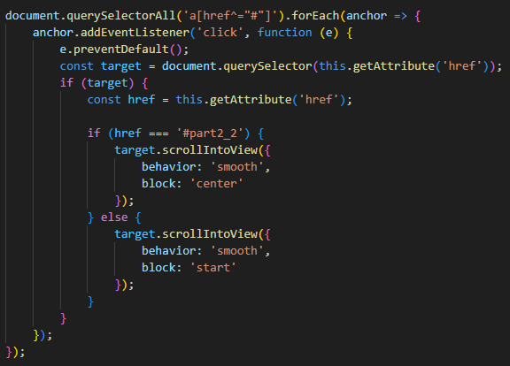
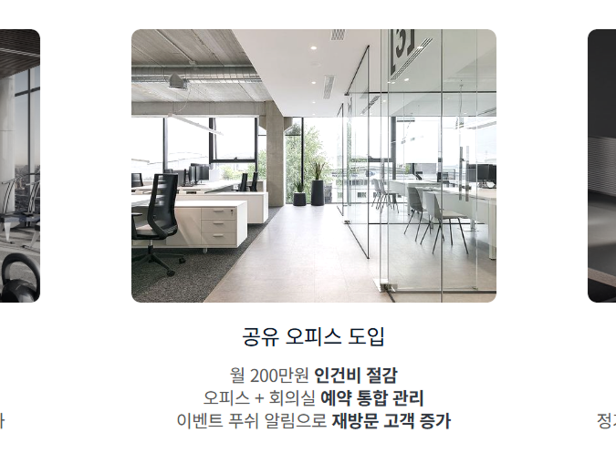
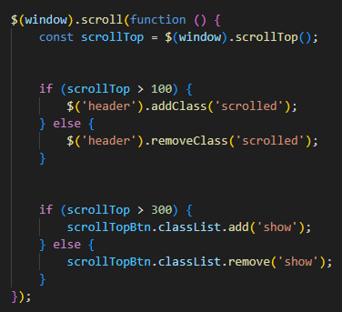

무인키오스크는 신뢰성이 중요한 제품입니다. 블루 계열의 컬러는 안정감과 전문성을 전달하며, 기술 제품에 대한 신뢰를 구축하는 데 효과적입니다.
랜딩페이지 구조
한 페이지에 모든 정보를 담아 사용자가 스크롤만으로 제품의 전체 정보를 파악할 수 있도록 설계했습니다. 페이지 이동 없이 정보를 제공하여 이탈률을 낮췄습니다.
고정 헤더
긴 랜딩페이지에서 사용자가 언제든 메뉴에 접근할 수 있도록 헤더를 고정했습니다. 스크롤 시 배경색이 변경되어 가독성을 유지합니다.
호버 효과
랜딩페이지의 특성상 시각적 인터랙션이 중요합니다. 각 섹션에 호버 효과를 적용하여 사용자의 시선을 끌고 클릭을 유도했습니다.
All sections
HTML 문서 내의 a태그를 사용한 부분들에서 'e.preventDefault()'로 바로 점프하는 동작을 막은 후 스크립트로
애니메이션을 제어하서 요소가 화면의 상단이나 중앙에 붙을 수 있도록 JavaScript로 구현했습니다. 'behavior: 'smooth'' 속성을 사용하여 부드럽게
애니메이션처럼 이동하도록 작업했습니다.

Visual
스크롤을 내리면 비주얼의 슬로건이 부드럽게 나타나도록 작업했습니다.
Sections
랜딩페이지의 특성을 고려하여 사용자의 시선을 잡아 끌 수 있도록 여러 섹션들에 다양한 호버 효과를 적용하였습니다.

Header & Viewport
길이가 긴 랜딩페이지의 특성상 헤더를 상단에 고정시키는 속성을 주었습니다. jQuery로 스크롤 위치를 자동으로 계산하여 스크롤이
100px 이상일때는 header에 scrolled 클래스를 추가하여 헤더의 배경색이 변경되고, 그렇지 않으면 제거되도록 작업했습니다. 또한 길이가 긴 랜딩페이지의 속성을
고려하여 스크롤이 300px 이상 내려가면 top 버튼이 나타나도록 하여 최상단으로 바로 이동 가능하도록 설계했습니다.

Review
서비스 이용자들의 실제 후기를 담아 서비스에 대한 신뢰도를 높였습니다. 시각적으로 한눈에 읽기 쉽도록 캐릭터와 말풍선으로
구성하였고, 서비스 선택을 고민하는 방문자가 쉽게 공감할 수 있는 내용들로 구성하여 설득력을 높였습니다.